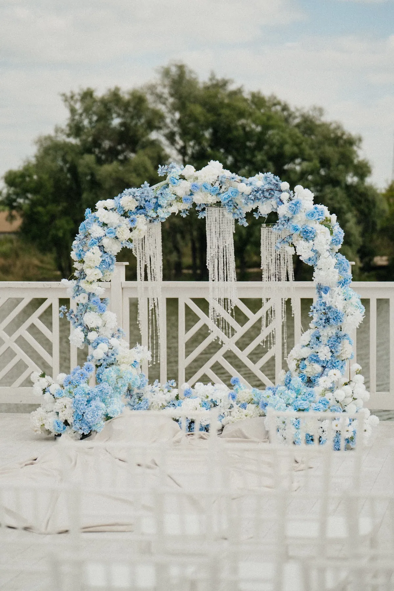
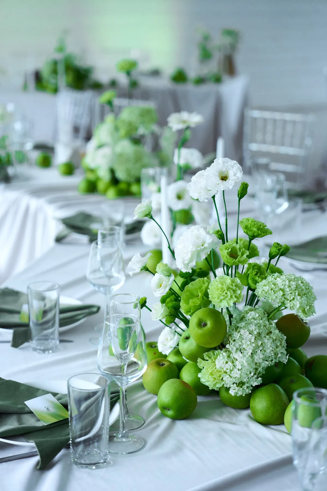
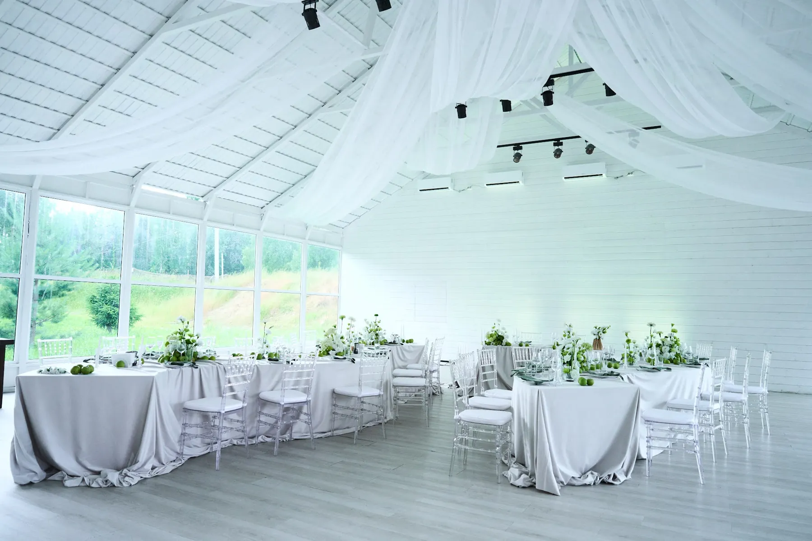

Лето — самый популярный сезон для свадеб, и у него свои сложности: жара для цветов, быстро меняющийся свет, внезапный дождь. Рассказываем, как оформить летнюю свадьбу, чтобы она была красивой и надёжной, на примерах наших свадеб 2026 года.
Палитры лета
Летом хорошо работают свежие, лёгкие цвета: белый, зелёный, голубой, пудровый, яблочный. Они не спорят с яркой природой и смотрятся прохладно в жару. Подробнее — в статьях про голубой, про зелёный и про белый. Глубокие цвета (бордо, красный) тоже возможны — как в свадьбах «Бордовое сердце у воды» и «Красный бархат и зелень» — но лучше с хорошим светом и светлой базой.


Цветы и жара
Для лета выбирают стойкие сорта, а композиции ставят как можно ближе ко времени церемонии и обеспечивают водой. Вне помещения продумывают тень: цветы и ткань на солнце быстро теряют вид. Для больших конструкций часть объёма можно собирать на основе из материалов, которые не требуют воды. Подробнее — в статьях про цветы на свадьбу и про живые и искусственные цветы.
Площадка и свет
Летом свадьбы часто проводят на природе: терраса, берег, шатёр, павильон. Дневной свет мягче утром и вечером; в полдень он резкий и даёт тени. Церемонию лучше планировать на более мягкое время, а арку поворачивать так, чтобы свет не бил в глаза. О шатре — в статье про свадьбу в шатре, о церемонии на улице — в статье про оформление выездной регистрации.

План на дождь и грозу
Даже в июле нужен запасной план: место под крышей, время на перенос арки и композиций, зонты и пледы для гостей. Ткань и лёгкие конструкции на улице фиксируют, а электрику защищают. Решите заранее, до какого часа принимается решение о переносе.
Совет: если у площадки есть стеклянный зал или шатёр, часть декора можно сразу ставить там, чтобы не переносить всё в последний момент.
Как заказать
Мы оформляем летние свадьбы в Москве и Подмосковье. Расскажите о площадке и дате — предложим палитру, цветы и план Б, и посчитаем смету.
Частые вопросы
Какие цветы лучше всего держатся в жару?
Это зависит от сорта и условий. Флорист подбирает стойкие варианты и подсказывает, как организовать воду и тень.
Как защитить декор от дождя?
Договориться о запасном месте под крышей и заранее решить, кто и как переносит конструкции.
За сколько заказывать оформление летней свадьбы?
Летние даты заполняются быстрее остальных, поэтому обсуждать оформление лучше заранее.